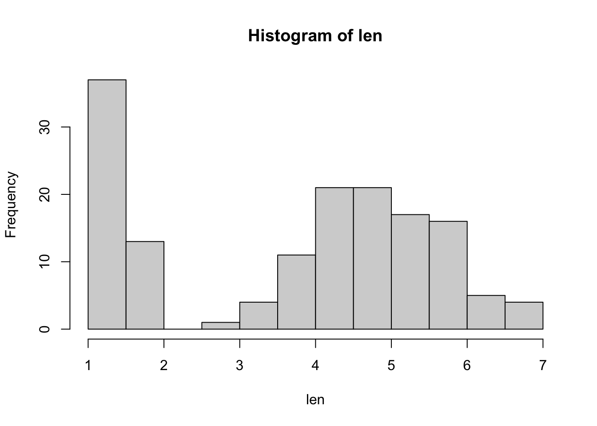

P-values and Intro to R
NRES 710
Last compiled: 2024-08-02
Download R code for the lecture
To follow along with the R-based lessons and demos, right (or command) click on this link and save the script to your project directory. Open your RStudio project in RStudio, then open the R code file.
Overview
A problem perceived by many in our field is that many ecologists and environmental scientists put too much emphasis on p-values. Not surprisingly, many statistics classes also focus heavily on how to calculate p-values. When I first learned statistics in graduate school, we had to calculate the F-statistics and then look up the associated p-value in the back of a book… Computers can do this for us now! Which is a great benefit. But yet, classes still focus on calculating p-values, because professors have placed historical emphasis on it. It’s a self-repeating process. My goal with this class is to de-ephasize p-values and avoid repeating this iterative process. So with this lecture and discussion today, we will talk about what p-values really area.
Probability values (p-values)
p-value – the probability of getting the observed data or something more extreme, given the null hypothesis (\(H_0\)) (‘H-naught’) is assumed true
- What is the null hypothesis? No relationship; e.g., no difference between groups, no slope in a regression line; no ‘signal’ in your data.
- We assume there is some hypothesized relationship, so we collect data and test the null that there is no relationship.
- If we get a p-value less than 0.05, this is ‘statistically significant’. We then reject the null and infer (learn) that a relationship really does exist in the world.
- However, the p-value says nothing about your data. It tells us the probability of getting some data ‘like ours’ or more extreme than ours, given that the null hypothesis is true.
- In order to know the probability of getting our data, we would have to know the truth about the system – what the true relationship is. We would have to know if there really is a relationship, or not.
- The p-value assumes there is no relationship (no slope, no difference between groups) and tells us what the probability of getting the outcome we got, under that assumption of no groups.
Q: I flipped a coin and it is in my hand. what is the probability that it is heads? 50%?
- Wrong. It has already been flipped. It either is heads (1), or it is not (0). I know the truth.
- What is the probability that you guess correct? Now you’ve got a 50:50 chance.
- Once it’s been flipped, it either is or it isn’t.
Alternative definitions of p-values
There are alternative definitions of a p-value that you might come across.
- Probability that your data was due to chance. However, this is wrong: we know your data was due to process or sampling error.
- Probability that the null hypothesis is true, with the idea being
that if the p-value is low, then we might think there is a small
probability that the null is true.
- However, in reality, the null is either TRUE or NOT. Just because we don’t whether the null is true or false does not mean there is some underlying probability of one reality vs the other. So this interpretation is also wrong.
Statistics can be hard to understand because these strange or whonky definitions are used. But we use them, and they do work, if we understand what the limitations are. This is one of the main reasons why Johnson (1999) doesn’t like the use of ‘naked p-values’. Too often people use p-values:
- Inappropriately
- Using a wrong or incorrect definition
And then they make conclusions that they should not be making.
P-values: an expression of clarity
All the p-value really tells us is how clear the statistical results are that we are inferring from our data. Large p-values are unclear results; small p-values are clear results.
If the p-value is small, we conclude there is a statistically significant relationship.
- But this does not necessarily mean the relationship is LARGE.
- Similarly, if we get a large p-value, it does not mean the relationship is absent or SMALL.
Q: Is the null hypothesis ever really true to begin with? What do you think?
- Yes, it can be! Trivial example: we might hypothesize that the color of a human’s shirt when they are planting trees influences plant growth. Because shirt is unlikely to have a biological effect on, the null hypothesis (no influence of shirt color on plant growth) is likely to be true. A controlled experiment will support this.
- However, with observational studies, there is rarely zero different
between groups and the null hypothesis is rarely true.
- E.g., coyote diet difference between spring and fall, tree density between clear cut and non-clear cut forest stands, etc.
- Often you have an a priori reason to believe there is a relationship. So, the chance that there is no difference is often nonsensical. You may have a small effect, but there is often a relationship.
- This is a limitation of p-vales: the null hypothesis is never really true… and yet we are calculating p-values based on the assumption that the null is true!
P-values, effect size, and sample size
P-values are a function of two things: effect size and sample size
- effect size – the slope or differenc between groups
- sample size – the number of observations; as sample size increases, p-values decrease, and vice versa
- We will use the term ‘effect size’ loosely in this class:
- Correlation does not mean causation. Just because we observe a relationship between two variables in an observation study does not mean cause and effect.
- Must do a manipulative experiment to demonstrate causation.
- We may make assumptions about causation when looking at the effect of variable X on Y, but we never actually claim there is causation.
- Best not to confuse statistical significance with biological significance.
Statistical vs. biological significance
Example: a drug to reduce the risk of heart attack. This drug is being used by the public and as such, it had to pass clinical trials. Researchers sampled the population of heart attack survivors and gave them either this new drug or a placebo drug and tested whether the drug reduced risk of having a second heart attack in five years.
| Group | Heart Attack | No Attack | Percentage | Additional Info |
|---|---|---|---|---|
| Placebo | 8040 | 3960 | 67% | Chi-squared = 42.2, 1 df |
| Drug | 7560 | 4440 | 63% | P-value = 9.02x10^-11 |
Q: Does this drug work??
Yes! It has a statistically significant effect of reducing heart attack. The results are pretty clear.
Q: Is this a drug you would take??
I dunno. How much does it cost? How do results compare to walking a mile every day, eating healthy, quitting alcohol or tobacco products, etc.
Is this a biologically significant effect? Maybe not so much.
Statistics are not objective; they are subjective. The depend on the analysis you use, the assumptions you made, and how you interpreted the results.
Q: Why do you think the result was so significant?
- Sample size of 12,000 people!
- Drug companies want to use statistics to get their drugs approved. If you are a drug company statistician, what are you going to do during your trials? Crank up your sample size.
It’s important that as scientists we are aware of how statistics should be used in honest way. Our goal is to help people learn – not to fool people.
Just because we get a significant p-value, it doesn’t mean that we have a large biological effect. This is why Johnson (1999) argues that we report the estimates of effects -– slope, difference – and the confidence intervals around those estimates – measures of uncertainty.
- We will report effect sizes and uncertainty in this class.
A small p-value can be due to a large effect or a large sample size.
A big p-value can be due to a small effect or a small sample size.
Power analysis – something you do before an experiment starts to try to understand the sample size needed to measure a statistically significant effect.
- The problem with power analysis is that we don’t know what the effect is! That’s why we are doing the study…
- Power analysis is often required by IACUC or grant applications. However, it’s not involved in theses or studies published in peer-reviewed papers. I won’t teach you how to do this in the class.
Putting things in perspective
Science is the search for truth through the accumulation of fact. Statistics is the method we use to calculate the estimate of truth using those facts. Keep this in mind. The goal of every statistical test is to give us an estimate of truth. A p-value does not provide us the estimate of truth. The estimate of truth is the slope or a difference between groups and the associated uncertainties around those effects.
Q: Which results would you rather have in your graduate student student?
- P = 0.04, n = 20
- P = 0.04, n = 100
The first one! There is a bigger effect that was recovered with a smaller sample size. This is more likely to be a biologically significant effect in nature.
As scientists, let’s assume everything has an effect. This is why we are doing these studies, because there is something we suspect to be true and we are thus doing these studies.
- In this class, I am going to encourage us as scientists to ask two
questions during our science.
- How big is that effect?
- How clear is our results?
- We don’t need a p-value for either. How big is it? Estimate. How clear is the result? Confidence intervals.
- We will still report the p-value because every journal on Earth requires it. But we are moving beyond this (sensu Johnson 1999) will instead report our EFFECT SIZE and our measure of UNCERTAINTY in that effect (the 95% confidence intervals) to help infer how clear the results are (sensu Dushoff et al. 2019).
Final thoughts
- You should have some background familiarity with p-values, t-test, ANOVA, etc.
- Our goals in this class are to use statistics to estimate truth. We assume there is a relationship, and we want to measure with it is a big relationship, a small relationship, and/or how clear.
- Don’t test for frivolous hypotheses in this class. Don’t test whether clear-cuts have small trees than uncut forests. Every p-value we generate should have an underlying reason to consider.
- The purpose of statistics is to validate hypotheses that we have. If you don’t have a hypothesis, don’t run statistics – instead you are data dredging and wasting your time and it’s not very good science. Some may be true relationship, some may be spurious correlations.
- Let’s think about what we are doing, why, and what is our goal. It should be: I want to get an estimate of truth. Will the statistic we are using give you an estimate of that?
- There are many ways to analyze our data… and they are all wrong!! Think carefully and try to use the best approach that suits our needs.
- Always estimate effects and confidence intervals. Don’t report naked p-values.
- Let’s look for SUBSTANTIAL EFFECTS: effects that would be measured strong even with small sample sizes.
- The p-value problem is not just a problem for environmental scientists. American Statistical Association in 2016 came out with a statement on the use of p-values and made a long to-do list of DON’TS for p-values. In 2019, American Statistician special issue: started with an article “Moving to a World Beyond P-Values” followed by over 40 separate articles on HOW NOT or HOW TO use p-values.
Working with data in R:
Let’s explore some of R’s built-in data sets (e.g., iris, mtcars, titanic). We will install the ‘titanic’ package first.
Notes about working in R:
R is an open-source project, and new packages are being added all the time.
R is incredibly powerful and feature rich. You are NOT expected to memorize syntax right away, but rather just know that the answer is always a few clicks away! ‘help’ files in R are extremely useful, as is information about how to use R that is found in books or on the internet.
‘Base R’ is the default software built into R that does not including loading any additional packages. Here is a ‘base R’ cheat sheet; this is a great reference for most of the basic tasks you will need to perform in R.
Learn to use R scripts, and save your scripts frequently! This is the primary record of what you’ve done and allows you and others to reproduce your workflows.
If you have a problem, Google it! Someone has likely had the same problem as you in the past and asked for solutions online. Or, ask ChatGPT for help on how to solve your coding problem in R. When either Googling or prompting ChatGPT for help, be mindful that potential solutions presented to you may not be ideal for your problem.
First R demo!
NOTE: for those wishing to follow along with the R-based demo in class, click here for an R-script that contains all the code blocks in this web-based lecture.
All of you should have R and RStudio installed on your computers. See the links page for some useful references.
Starting at the most basic level, R can be used as a calculator. Try it!
# Getting started with R -----------------
# Use R as a calculator. Run the following code from your script (top-left panel in RStudio)
# through your Console (bottom-left panel in RStudio)
2 + 2 # use R as a calculator## [1] 4four <- 2 + 2 # define your first variable! This creates an 'object' called 'four'
four## [1] 4five <- 2 + 2 # BEWARE: you can make mistakes and define misleading labels - so be careful!
three <- four + five
three## [1] 8What about those hashtags (#) in the above code block? These are ‘comments’ that can be used to annotate your code so that your code is more understandable to someone reading it (you!). Comments are super helpful; use them early and often!
Use RStudio’s autofill feature to avoid typos!
Explore R’s existing datasets
# R has many built in datasets
# data() # 'uncomment' this command and run it to explore built-in datasets
# # code can be uncommented with CTRL SHIFT C (PC) or COMMAND SHIFT C (Mac)Let’s start by working with Fisher’s famous iris dataset:

#iris # this is a data frame -- the basic data storage type in R
head(iris) # [add your own comment here!]## Sepal.Length Sepal.Width Petal.Length Petal.Width Species
## 1 5.1 3.5 1.4 0.2 setosa
## 2 4.9 3.0 1.4 0.2 setosa
## 3 4.7 3.2 1.3 0.2 setosa
## 4 4.6 3.1 1.5 0.2 setosa
## 5 5.0 3.6 1.4 0.2 setosa
## 6 5.4 3.9 1.7 0.4 setosa# tail(iris)
# ?iris # uncomment this to learn more about the iris dataset
# str(iris)
len <- iris$Petal.Length
hist(len) # what does this do? How could you learn more about this 'hist' function?
# Q: what kind of data are petal lengths?Now let’s switch to the ‘titanic’ dataset. To get this dataset you need to install an R package!
#install.packages("titanic") # uncomment this command to install the package. you only need to install once! so comment the code after installing.
library(titanic) # this 'loads' the package and needs to be done every time you run this script
data("titanic_train")
head(titanic_train)## PassengerId Survived Pclass
## 1 1 0 3
## 2 2 1 1
## 3 3 1 3
## 4 4 1 1
## 5 5 0 3
## 6 6 0 3
## Name Sex Age SibSp Parch
## 1 Braund, Mr. Owen Harris male 22 1 0
## 2 Cumings, Mrs. John Bradley (Florence Briggs Thayer) female 38 1 0
## 3 Heikkinen, Miss. Laina female 26 0 0
## 4 Futrelle, Mrs. Jacques Heath (Lily May Peel) female 35 1 0
## 5 Allen, Mr. William Henry male 35 0 0
## 6 Moran, Mr. James male NA 0 0
## Ticket Fare Cabin Embarked
## 1 A/5 21171 7.2500 S
## 2 PC 17599 71.2833 C85 C
## 3 STON/O2. 3101282 7.9250 S
## 4 113803 53.1000 C123 S
## 5 373450 8.0500 S
## 6 330877 8.4583 Q# ?titanic_train # uncomment and run to learn more about the data
# Q: What kind of data are those in the "Embarked" column? How might you learn more
# Q: What kind of data are those in "Pclass?"
# Q: How might you learn more about data types for all variables?We can even make our own dataset!
# Make our own data -------------------
# lets pull 15 numbers from the standard normal distribution
a <- rnorm(15)
a <- rnorm(15, mean = 2, sd = 0.5)
# let's pull 15 numbers from the binomial distribution
b <- rbinom(15, size = 1, prob = 0.2) # we could "weight the coin"
# we can create categories:
unit <- rep(c("Control", "+N", "+P", "+NP"), each = 20)
# we can even create a whole dataframe
plant.data <- data.frame(
Obs.Id = 1:100, # 100 plants
Treatment = rep(c("A", "B", "C", "D", "E"), each = 20), # 5 treatments
Block = rep(1:20, times = 5), # 5 randomized blocks
Germination = rpois(100, lambda = rep(c(1, 5, 4, 7, 1), each = 20)), # Germination status: 1 (yes), 0 (no)
AvgHeight = rnorm(100, mean = rep(c(10, 30, 31, 25, 35, 7), each = 20)) # Final plant height
)
head(plant.data)## Obs.Id Treatment Block Germination AvgHeight
## 1 1 A 1 0 11.407381
## 2 2 A 2 0 10.422546
## 3 3 A 3 2 10.270785
## 4 4 A 4 4 10.633338
## 5 5 A 5 0 11.525027
## 6 6 A 6 2 9.091846We can also import data from files stored on our computers (or even directly from the web)
# import data from file ----------------------
# Don't forget to set your working directory (or just make sure you're using an Rstudio Project).
# setwd("~/Desktop") # uncomment and run if you want to set the desktop as your working directory.
#Read in the data. Note that the file needs to be in CSV format, the name must be in quotes, and the name must include the csv extension.
# Pleach <- read.csv("PbyTime_Bio.csv", header=T) # this won't work for you because you don't have this file.
# Use your own file to try it out. Or, download a file by entering this link into your web browser: https://brianfolt.github.io/NRES_710/CourseSchedule.csvNote: I recommend always using RStudio projects whenever you are working on any statistical analysis in R (homework exercises, class projects, analysis for your thesis chapter, etc.). This reduces the hassle of setting working directories and is a great habit to get into. By default, the project directory automatically becomes the working directory for your analysis!